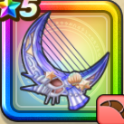

クレセントムーン
攻略班 7.5点 / かまいたちチャームスカラセイレーンのささやきしおさいのセレナーデ※錬成で強化可能
くわしい特徴
【レベル別習得スキル】 Lv1【スパスタ】戦闘時のハッスルダンスHP回復効果+5% Lv1かまいたち（消費MP：5）エレメント系に威力180%それ以外の系統には130%の体技ダメージを与える Lv10チャーム（消費MP：12）敵1体をたまに魅了する Lv15スカラ（消費MP：11）使用時含む5ターンの間、味方ひとりの守備力を2段階上げる Lv20セイレーンのささやき（消費MP：17）味方1人の回復特技の回復量を増やす。1段階で約20％、2段階で約40％増やせる Lv30しおさいのセレナーデ（消費MP：31）敵全体に威力160％のバギ属性体技ダメージ後、160％の無属性体技ダメージを与える。ショータイム発動時は仲間全員のHPを20回復させる Lv35水系へのダメージ+5% Lv40水系へのダメージ+5% Lv45攻撃時+2%の確率で魅了を与える Lv50攻撃力+12錬成スキル改1セイレーンのささやき改（消費MP：25）味方ひとりの回復とくぎの回復量を上げ、さらに自身の闘魂をかなりみなぎらせる。改2しおさいのセレナーデ改（消費MP：40）敵全体にバギ属性か属性の無い360%体技ダメージを与え、自身に闘魂を付与。闘魂状態が3のとき、追加で敵1体を耐性を無視して魅了し闘魂を解除改3戦闘時のハッスルダンスHP回復効果+10%改4錬成ぶき特別演出解放・メガモン討伐結果発表時に特別演出が追加・武器の見た目に特別なエフェクトが追加 【限界突破スキル】 1凸スキルの斬撃・体技ダメージ+5% 2凸スキルの斬撃・体技ダメージ+5% 3凸スキルの斬撃・体技ダメージ+5% 4凸スキルの斬撃・体技ダメージ+5%